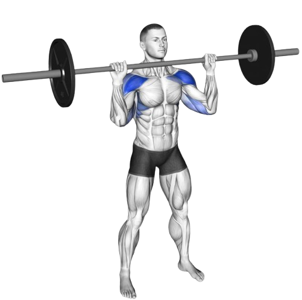
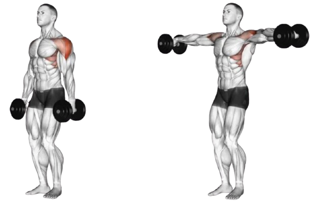

02
Shoulder
- Rotator cuff: The rotator cuff is a group of four muscles—the supraspinatus, infraspinatus, teres minor and subscapularis—that work together to provide stability for the humeral head, which is the top of the upper arm bone. They keep the shoulder in its socket. The rotator cuff muscles also play a role in lifting and rotating the arm. Rotator cuff injuries, especially dislocations, are common.
- Anterior deltoids: The front delts that help move your arm forward. They connect to your clavicle. You use your front delts if you reach for an object on a shelf.
- Lateral deltoids: Side delts that help move your arm out to the side, as well as up and down. They connect to your acromion, a bony nob on your shoulder blade. You use your side delts if you do jumping jacks.
- Posterior deltoids: Rear delts that help move your arm backward. They connect to the flat surface of your shoulder blade. You use your rear delts if you pitch a baseball.
- We are going to be focusing on the deltoids in this segment.
- Barbell Shoulder Press
- Rear Delt Flyes
- Side Lateral Raise
3x6-8 (3 sets, 6-8 repitions)
The barbell shoulder press targets the deltoids and trapezius, along with the smaller,
deeper muscles that make up your shoulders. You’ll also engage your triceps, biceps, back,
and core for greater body strength. The simplicity of the barbell shoulder press makes it a
good exercise for people of all fitness levels.
Because the barbell shoulder press strengthens your upper body and core, it may help improve
your posture. Improved posture can translate into reduced aches and pains, especially in
the back and neck.

The barbell shoulder press targets the deltoids and trapezius, along with the smaller, deeper muscles that make up your shoulders. You’ll also engage your triceps, biceps, back, and core for greater body strength. The simplicity of the barbell shoulder press makes it a good exercise for people of all fitness levels.
Because the barbell shoulder press strengthens your upper body and core, it may help improve your posture. Improved posture can translate into reduced aches and pains, especially in the back and neck.
3x8-10 (3 sets, 8-10 repitions)
The rear delt fly is a dumbbell exercise which involves sweeping the dumbbell out to the
side to train the rear deltoids. In addition to the rear delts, this exercise works the
traps, rhomdoids, lateral deltoids, and core.
The use of free weights means rear delt flyes are great for improving both strength and
stability in the shoulders. It can also help to identify and minimise muscular
imbalances as each arm must lift the exact same load. Working the rear delts can help to
improve poor posture and reduce imbalances between the front of the body and back, which
can often occur in people who spend a lot of their day slouched or hunched forward.
Rear delt flyes can be done seated or standing

The rear delt fly is a dumbbell exercise which involves sweeping the dumbbell out to the side to train the rear deltoids. In addition to the rear delts, this exercise works the traps, rhomdoids, lateral deltoids, and core.
The use of free weights means rear delt flyes are great for improving both strength and stability in the shoulders. It can also help to identify and minimise muscular imbalances as each arm must lift the exact same load. Working the rear delts can help to improve poor posture and reduce imbalances between the front of the body and back, which can often occur in people who spend a lot of their day slouched or hunched forward.
Rear delt flyes can be done seated or standing
3x6-8 (3 sets, 6-8 repitions)
The lateral raise is a strength training isolation exercise that works the
shoulders (specifically the lateral deltoids), with the trapezius (upper back)
supporting by stabilising the exercise.
This exercise involves lifting weights away from your body, out to the side.
It's an exercise which looks much easier than it is, and even using light
weights for lateral raises can help to build strength and size. An added bonus
is that lat raises can improve the range of motion in your shoulder, and help to
stabilise the shoulders.

The lateral raise is a strength training isolation exercise that works the shoulders (specifically the lateral deltoids), with the trapezius (upper back) supporting by stabilising the exercise.
This exercise involves lifting weights away from your body, out to the side. It's an exercise which looks much easier than it is, and even using light weights for lateral raises can help to build strength and size. An added bonus is that lat raises can improve the range of motion in your shoulder, and help to stabilise the shoulders.